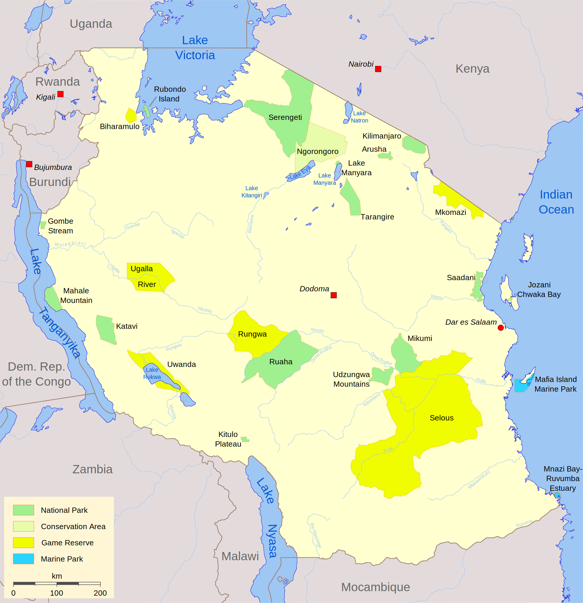

<!doctype html>
<html lang="en">
    <head>
        <meta charset="utf-8">
        <meta http-equiv="X-UA-Compatible" content="IE=edge">
        <meta name="viewport" content="initial-scale=1,user-scalable=no,maximum-scale=1,width=device-width">
        <meta name="mobile-web-app-capable" content="yes">
        <meta name="apple-mobile-web-app-capable" content="yes">
        <link rel="stylesheet" href="css/leaflet.css">
        <link rel="stylesheet" href="css/L.Control.Layers.Tree.css">
        <link rel="stylesheet" href="css/qgis2web.css">
        <link rel="stylesheet" href="css/fontawesome-all.min.css">
        <link rel="stylesheet" href="css/leaflet.photon.css">
		<link rel="stylesheet" href="css/L.Control.MousePosition.css">
        <style>
        html, body, #map {
            width: 100%;
            height: 100%;
            padding: 0;
            margin: 0;
        }
		img{
			max-width:100%;
			max-height:100%;
		}
        </style>
        <title>Forest Reserves and National Parks in Tanzania</title>
    </head>
    <body>
        <div id="map">
        </div>
        <script src="js/qgis2web_expressions.js"></script>
        <script src="js/leaflet.js"></script>
        <script src="js/L.Control.Layers.Tree.min.js"></script>
        <script src="js/leaflet.rotatedMarker.js"></script>
        <script src="js/leaflet.pattern.js"></script>
        <script src="js/leaflet-hash.js"></script>
        <script src="js/Autolinker.min.js"></script>
        <script src="js/rbush.min.js"></script>
        <script src="js/labelgun.min.js"></script>
        <script src="js/labels.js"></script>
        <script src="js/leaflet.photon.js"></script>
		<script src="js/L.Control.MousePosition.js"></script>
        <script src="data/TanzaniaNationalParks2016_1.js"></script>
        <script src="data/TanzaniaForestReserves2020_2.js"></script>
        <script>
        var highlightLayer;
        function highlightFeature(e) {
        highlightLayer = e.target;

		highlightLayer.setStyle({
		color: '#cb6649',
		weight: 4,
        });
        }
        
		function zoomToFeature(e) {map.fitBounds(e.target.getBounds({padding:[200,200]}));}

        var map = L.map('map', {
            zoomControl:false, maxZoom:28, minZoom:5
        })
        var hash = new L.Hash(map);
        map.attributionControl.setPrefix('<a href="https://github.com/tomchadwin/qgis2web" target="_blank">qgis2web</a> &middot; <a href="https://leafletjs.com" title="A JS library for interactive maps">Leaflet</a> &middot; <a href="https://qgis.org">QGIS</a> &middot;<a href="https://github.com/ardhi/Leaflet.MousePosition%22"target="_blank">Leaflet.MousePosition</a>');
        var autolinker = new Autolinker({truncate: {length: 30, location: 'smart'}});
        // remove popup's row if "visible-with-data"
        function removeEmptyRowsFromPopupContent(content, feature) {
         var tempDiv = document.createElement('div');
         tempDiv.innerHTML = content;
         var rows = tempDiv.querySelectorAll('tr');
         for (var i = 0; i < rows.length; i++) {
             var td = rows[i].querySelector('td.visible-with-data');
             var key = td ? td.id : '';
             if (td && td.classList.contains('visible-with-data') && feature.properties[key] == null) {
                 rows[i].parentNode.removeChild(rows[i]);
             }
         }
         return tempDiv.innerHTML;
        }
        // modify popup if contains media
        function addClassToPopupIfMedia(content, popup) {
            var tempDiv = document.createElement('div');
            tempDiv.innerHTML = content;
            var imgTd = tempDiv.querySelector('td img');
            if (imgTd) {
                var src = imgTd.getAttribute('src');
                if (/\.(jpg|jpeg|png|gif|bmp|webp|avif)$/i.test(src)) {
                    popup._contentNode.classList.add('media');
                    setTimeout(function() {
                        popup.update();
                    }, 10);
                } else if (/\.(mp3|wav|ogg|aac)$/i.test(src)) {
                    var audio = document.createElement('audio');
                    audio.controls = true;
                    audio.src = src;
                    imgTd.parentNode.replaceChild(audio, imgTd);
                    popup._contentNode.classList.add('media');
                    setTimeout(function() {
                        popup.setContent(tempDiv.innerHTML);
                        popup.update();
                    }, 10);
                } else if (/\.(mp4|webm|ogg|mov)$/i.test(src)) {
                    var video = document.createElement('video');
                    video.controls = true;
                    video.src = src;
                    video.style.width = "400px";
                    video.style.height = "300px";
                    video.style.maxHeight = "60vh";
                    video.style.maxWidth = "60vw";
                    imgTd.parentNode.replaceChild(video, imgTd);
                    popup._contentNode.classList.add('media');
                    // Aggiorna il popup quando il video carica i metadati
                    video.addEventListener('loadedmetadata', function() {
                        popup.update();
                    });
                    setTimeout(function() {
                        popup.setContent(tempDiv.innerHTML);
                        popup.update();
                    }, 10);
                } else {
                    popup._contentNode.classList.remove('media');
                }
            } else {
                popup._contentNode.classList.remove('media');
            }
        }
        var title = new L.Control({'position':'bottomleft'});
        title.onAdd = function (map) {
            this._div = L.DomUtil.create('div', 'info');
            this.update();
            return this._div;
        };
        title.update = function () {
            this._div.innerHTML = '<h2>Forest Reserves and National Parks in Tanzania</h2><p>Data produced in years 2016 and 2020</p>';
        };
        title.addTo(map);
        var abstract = new L.Control({'position':'bottomleft'});
        abstract.onAdd = function (map) {
            this._div = L.DomUtil.create('div',
            'leaflet-control abstract');
            this._div.id = 'abstract'
                this._div.setAttribute("onmouseenter", "abstract.show()");
                this._div.setAttribute("onmouseleave", "abstract.hide()");
                this.hide();
                return this._div;
            };
            abstract.hide = function () {
                this._div.classList.remove("abstractUncollapsed");
                this._div.classList.add("abstract");
                this._div.innerHTML = 'i'
            }
            abstract.show = function () {
                this._div.classList.remove("abstract");
                this._div.classList.add("abstractUncollapsed");
                this._div.innerHTML = '<a href="https://en.wikipedia.org/wiki/List_of_protected_areas_of_Tanzania"></a><br><br>The map shows the Tanzania Forest Reserves and the National parks. The data layers have last been updated in 2020 and 2016. The data layers on the forest reserves and national parks are from the national agency of Tanzania National Parks (TANAPA).<br /><br />Data Citation: UNEP-WCMC (2021). Protected Area Profile for United Republic of Tanzania from the World Database of Protected Areas, August 2021. Available at: www.protectedplanet.net';
        };
        abstract.addTo(map);
        var zoomControl = L.control.zoom({
            position: 'topleft'
        }).addTo(map);
        var bounds_group = new L.featureGroup([]);
        function setBounds() {
            if (bounds_group.getLayers().length) {
                map.fitBounds(bounds_group.getBounds());
            }
        }
        map.createPane('pane_OpenStreetMap_0');
        map.getPane('pane_OpenStreetMap_0').style.zIndex = 400;
        var layer_OpenStreetMap_0 = L.tileLayer('https://tile.openstreetmap.org/{z}/{x}/{y}.png', {
            pane: 'pane_OpenStreetMap_0',
            opacity: 1.0,
            attribution: '<a href="https://www.openstreetmap.org/">© OpenStreetMap contributors</a>',
            minZoom: 5,
            maxZoom: 28,
            minNativeZoom: 0,
            maxNativeZoom: 18
		})
		var layer_Google_sat = L.tileLayer('https://www.google.cn/maps/vt?lyrs=s@189&gl=cn&x={x}&y={y}&z={z}', {
			minZoom: 5,
			maxZoom: 28,
			attribution: '<a href="https://www.google.com/maps">© Google</a>'
        });
        map.addLayer(layer_OpenStreetMap_0, layer_Google_sat);
		L.control.mousePosition({
		numDigits: 2,
		})
		.addTo(map);
		
        function pop_TanzaniaNationalParks2016_1(feature, layer) {
            layer.on({
                mouseout: function(e) {
                    for (var i in e.target._eventParents) {
                        if (typeof e.target._eventParents[i].resetStyle === 'function') {
                            e.target._eventParents[i].resetStyle(e.target);
                        }
                    }
                },
                mouseover: highlightFeature,
				click: zoomToFeature,
            });
            var popupContent = '<table>\
                    <tr>\
                        <th scope="row">Name</th>\
                        <td class="visible-with-data" id="name">' + (feature.properties['name'] !== null ? autolinker.link(String(feature.properties['name']).replace(/'/g, '\'').toLocaleString()) : '') + '</td>\
                    </tr>\
                    <tr>\
                        <th scope="row">Designation</th>\
                        <td class="visible-with-data" id="desig">' + (feature.properties['desig'] !== null ? autolinker.link(String(feature.properties['desig']).replace(/'/g, '\'').toLocaleString()) : '') + '</td>\
                    </tr>\
                    <tr>\
                        <th scope="row">Area (km^2)</th>\
                        <td class="visible-with-data" id="gis_area">' + (feature.properties['gis_area'] !== null ? autolinker.link(String(feature.properties['gis_area']).replace(/'/g, '\'').toLocaleString()) : '') + '</td>\
                    </tr>\
                    <tr>\
                        <th scope="row">Status year</th>\
                        <td class="visible-with-data" id="status_yr">' + (feature.properties['status_yr'] !== null ? autolinker.link(String(feature.properties['status_yr']).replace(/'/g, '\'').toLocaleString()) : '') + '</td>\
                    </tr>\
                </table>';
            var content = removeEmptyRowsFromPopupContent(popupContent, feature);
			layer.on('popupopen', function(e) {
				addClassToPopupIfMedia(content, e.popup);
			});
			layer.bindPopup(content, { maxHeight: 400 });
        }

        function style_TanzaniaNationalParks2016_1_0(feature) {
            switch(String(feature.properties['desig_eng'])) {
                case 'Conservation Area':
                    return {
                pane: 'pane_TanzaniaNationalParks2016_1',
                opacity: 1,
                color: 'rgba(35,35,35,1.0)',
                dashArray: '',
                lineCap: 'butt',
                lineJoin: 'miter',
                weight: 1.0, 
                fill: true,
                fillOpacity: 1,
                fillColor: 'rgba(68,1,84,1.0)',
                interactive: true,
            }
                    break;
                case 'Game Reserve':
                    return {
                pane: 'pane_TanzaniaNationalParks2016_1',
                opacity: 1,
                color: 'rgba(35,35,35,1.0)',
                dashArray: '',
                lineCap: 'butt',
                lineJoin: 'miter',
                weight: 1.0, 
                fill: true,
                fillOpacity: 1,
                fillColor: 'rgba(59,82,139,1.0)',
                interactive: true,
            }
                    break;
                case 'National Park':
                    return {
                pane: 'pane_TanzaniaNationalParks2016_1',
                opacity: 1,
                color: 'rgba(35,35,35,1.0)',
                dashArray: '',
                lineCap: 'butt',
                lineJoin: 'miter',
                weight: 1.0, 
                fill: true,
                fillOpacity: 1,
                fillColor: 'rgba(33,144,141,1.0)',
                interactive: true,
            }
                    break;
                case 'Open area':
                    return {
                pane: 'pane_TanzaniaNationalParks2016_1',
                opacity: 1,
                color: 'rgba(35,35,35,1.0)',
                dashArray: '',
                lineCap: 'butt',
                lineJoin: 'miter',
                weight: 1.0, 
                fill: true,
                fillOpacity: 1,
                fillColor: 'rgba(93,201,99,1.0)',
                interactive: true,
            }
                    break;
                case 'Wildlife Management Area':
                    return {
                pane: 'pane_TanzaniaNationalParks2016_1',
                opacity: 1,
                color: 'rgba(35,35,35,1.0)',
                dashArray: '',
                lineCap: 'butt',
                lineJoin: 'miter',
                weight: 1.0, 
                fill: true,
                fillOpacity: 1,
                fillColor: 'rgba(253,231,37,1.0)',
                interactive: true,
            }
                    break;
            }
        }
        map.createPane('pane_TanzaniaNationalParks2016_1');
        map.getPane('pane_TanzaniaNationalParks2016_1').style.zIndex = 401;
        map.getPane('pane_TanzaniaNationalParks2016_1').style['mix-blend-mode'] = 'normal';
		map.getPane('pane_TanzaniaNationalParks2016_1').style.opacity = 0.7;	
        var layer_TanzaniaNationalParks2016_1 = new L.geoJson(json_TanzaniaNationalParks2016_1, {
            attribution: '',
            interactive: true,
            dataVar: 'json_TanzaniaNationalParks2016_1',
            layerName: 'layer_TanzaniaNationalParks2016_1',
            pane: 'pane_TanzaniaNationalParks2016_1',
            onEachFeature: pop_TanzaniaNationalParks2016_1,
            style: style_TanzaniaNationalParks2016_1_0,
        });
        bounds_group.addLayer(layer_TanzaniaNationalParks2016_1);
        map.addLayer(layer_TanzaniaNationalParks2016_1);
        function pop_TanzaniaForestReserves2020_2(feature, layer) {
            layer.on({
                mouseout: function(e) {
                    for (var i in e.target._eventParents) {
                        if (typeof e.target._eventParents[i].resetStyle === 'function') {
                            e.target._eventParents[i].resetStyle(e.target);
                        }
                    }
                },
                mouseover: highlightFeature,
				click: zoomToFeature,
            });
            var popupContent = '<table>\
                    <tr>\
                        <th scope="row">Name</th>\
                        <td class="visible-with-data" id="name">' + (feature.properties['name'] !== null ? autolinker.link(String(feature.properties['name']).replace(/'/g, '\'').toLocaleString()) : '') + '</td>\
                    </tr>\
                    <tr>\
                        <th scope="row">Designation</th>\
                        <td class="visible-with-data" id="desig">' + (feature.properties['desig'] !== null ? autolinker.link(String(feature.properties['desig']).replace(/'/g, '\'').toLocaleString()) : '') + '</td>\
                    </tr>\
                    <tr>\
                        <th scope="row">Area (km^2)</th>\
                        <td class="visible-with-data" id="gis_area">' + (feature.properties['gis_area'] !== null ? autolinker.link(String(feature.properties['gis_area']).replace(/'/g, '\'').toLocaleString()) : '') + '</td>\
                    </tr>\
                    <tr>\
                        <th scope="row">Status year</th>\
                        <td class="visible-with-data" id="status_yr">' + (feature.properties['status_yr'] !== null ? autolinker.link(String(feature.properties['status_yr']).replace(/'/g, '\'').toLocaleString()) : '') + '</td>\
                    </tr>\
                </table>';
            var content = removeEmptyRowsFromPopupContent(popupContent, feature);
			layer.on('popupopen', function(e) {
				addClassToPopupIfMedia(content, e.popup);
			});
			layer.bindPopup(content, { maxHeight: 400 });
        }

		var pattern_FP = new L.StripePattern({
			weight: 1.5,
			spaceWeight: 1,
			color: '#bee055',
			opacity: 1.0,
			spaceOpacity: 0,
			angle: 270
		});
		pattern_FP.addTo(map);
		
		var pattern_FR = new L.StripePattern({
			weight: 1.5,
			spaceWeight: 1,
			color: '#047e00',
			opacity: 1.0,
			spaceOpacity: 0,
			angle: 270
		});
		pattern_FR.addTo(map);
		
		var pattern_NFR = new L.StripePattern({
			weight: 1.5,
			spaceWeight: 1,
			color: '#7fe17c',
			opacity: 1.0,
			spaceOpacity: 0,
			angle: 270
		});
		pattern_NFR.addTo(map); 
		
        function style_TanzaniaForestReserves2020_2_0(feature) {
            switch(String(feature.properties['q2wHide_desig_eng'])) {
                case 'Forest Plantation':
                    return {
                pane: 'pane_TanzaniaForestReserves2020_2',
                opacity: 1,
                color: 'rgba(35,35,35,1.0)',
                dashArray: '',
                lineCap: 'butt',
                lineJoin: 'miter',
                weight: 1.0, 
                fill: true,
                fillOpacity: 1,
				fillPattern: pattern_FP,
                fillColor: 'rgba(247,252,245,1.0)',
                interactive: true,
            }
                    break;
                case 'Forest Reserve':
                    return {
                pane: 'pane_TanzaniaForestReserves2020_2',
                opacity: 1,
                color: 'rgba(35,35,35,1.0)',
                dashArray: '',
                lineCap: 'butt',
                lineJoin: 'miter',
                weight: 1.0, 
                fill: true,
                fillOpacity: 1,
				fillPattern: pattern_FR,
                fillColor: 'rgba(123,199,124,1.0)',
                interactive: true,
            }
                    break;
                case 'Nature Forest Reserve':
                    return {
                pane: 'pane_TanzaniaForestReserves2020_2',
                opacity: 1,
                color: 'rgba(35,35,35,1.0)',
                dashArray: '',
                lineCap: 'butt',
                lineJoin: 'miter',
                weight: 1.0, 
                fill: true,
                fillOpacity: 1,
				fillPattern: pattern_NFR,
                fillColor: 'rgba(0,68,27,1.0)',
                interactive: true,
            }
                    break;
            }
        }
        map.createPane('pane_TanzaniaForestReserves2020_2');
        map.getPane('pane_TanzaniaForestReserves2020_2').style.zIndex = 402;
        map.getPane('pane_TanzaniaForestReserves2020_2').style['mix-blend-mode'] = 'normal';
        var layer_TanzaniaForestReserves2020_2 = new L.geoJson(json_TanzaniaForestReserves2020_2, {
            attribution: '<a href="https://www.protectedplanet.net/country/TZA">UNEP-WCMC</a>',
            interactive: true,
            dataVar: 'json_TanzaniaForestReserves2020_2',
            layerName: 'layer_TanzaniaForestReserves2020_2',
            pane: 'pane_TanzaniaForestReserves2020_2',
            onEachFeature: pop_TanzaniaForestReserves2020_2,
            style: style_TanzaniaForestReserves2020_2_0,
        });
        bounds_group.addLayer(layer_TanzaniaForestReserves2020_2);
        map.addLayer(layer_TanzaniaForestReserves2020_2);
        map.addLayer(layer_Google_sat);
		var overlaysTree = [
            {label: '<b>Tanzania Forest Reserves 2020</b><br /><table><tr><td style="text-align: center;"></td><td>Forest Plantation</td></tr><tr><td style="text-align: center;"></td><td>Forest Reserve</td></tr><tr><td style="text-align: center;"></td><td>Nature Forest Reserve</td></tr></table>', layer: layer_TanzaniaForestReserves2020_2},
            {label: '<b>Tanzania National Parks 2016</b><br /><table><tr><td style="text-align: center;"></td><td>Conservation Area</td></tr><tr><td style="text-align: center;"></td><td>Game Reserve</td></tr><tr><td style="text-align: center;"></td><td>National Park</td></tr><tr><td style="text-align: center;"></td><td>Open area</td></tr><tr><td style="text-align: center;"></td><td>Wildlife Management Area</td></tr></table>', layer: layer_TanzaniaNationalParks2016_1},
            {label: "OpenStreetMap", layer: layer_OpenStreetMap_0},]
		var baseMaps = {
		"OpenStreetMap": layer_OpenStreetMap_0,
		"Google Satellite": layer_Google_sat
		};
		var lay = L.control.layers.tree(null, overlaysTree,{
            //namedToggle: true,
            //selectorBack: false,
            //closedSymbol: '&#8862; &#x1f5c0;',
            //openedSymbol: '&#8863; &#x1f5c1;',
            //collapseAll: 'Collapse all',
            //expandAll: 'Expand all',
            collapsed: true,
        });
        lay.addTo(map);
        setBounds();
        </script>        
    </body>
</html>
